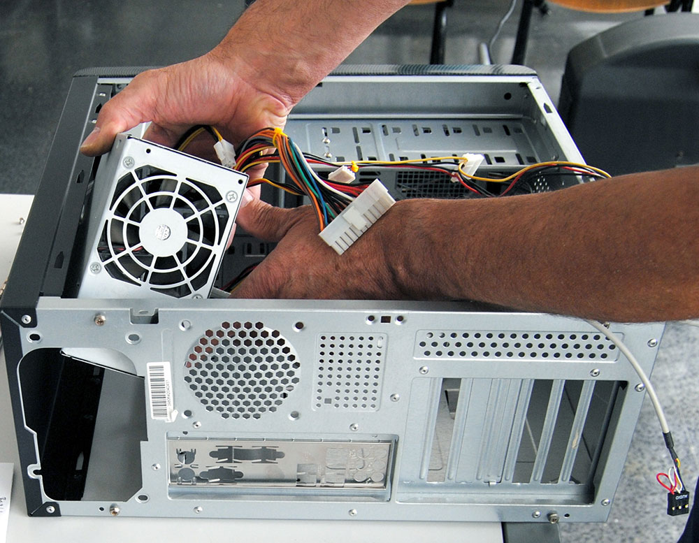
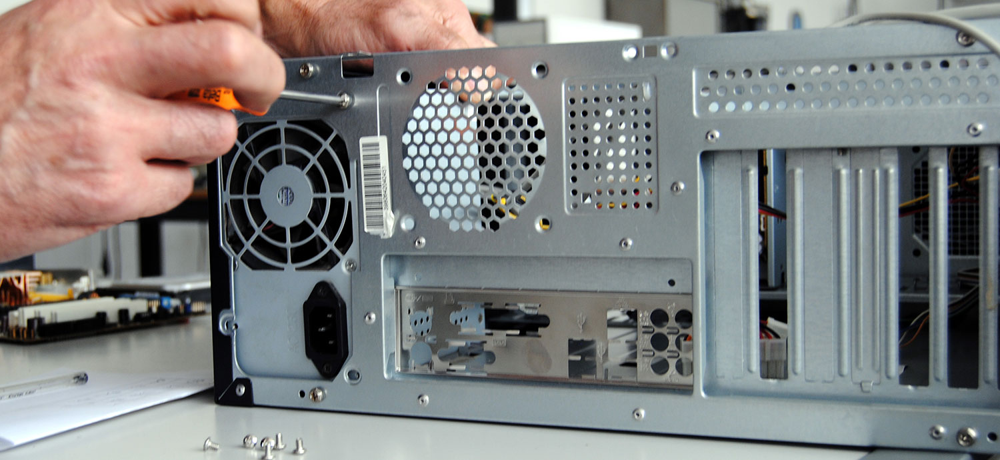

alimentatore
alimentatore, è un convertitore corrente alternata-corrente continua, ovvero un apparato elettrico che serve a raddrizzare in uscita la tensione elettrica in ingresso, in modo da fornire energia elettrica adattandola all'uso di altre apparecchiature elettriche come elettrodomestici, modificando eventualmente anche i livelli di tensione e intensità di corrente, e dunque potenza in uscita, attraverso un trasformatore.
piazzare nella posizione prestabilita e avvitarlo al case
 (clicca qui per vedere i prezzi)